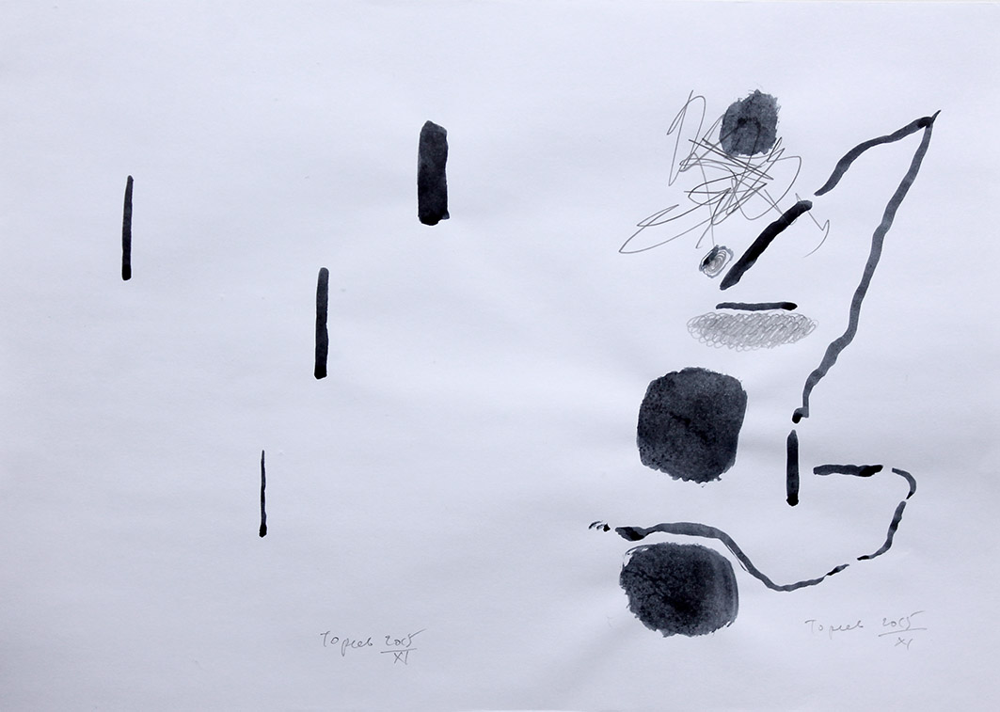
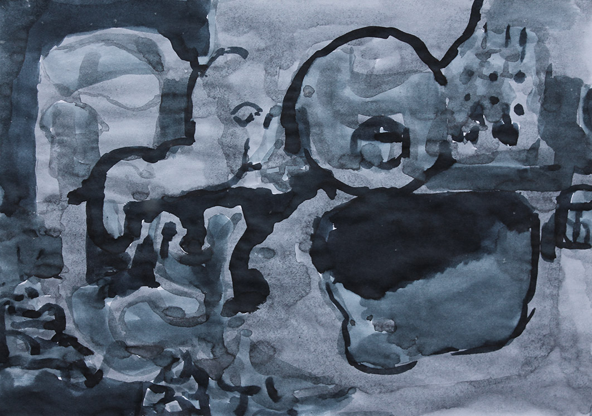
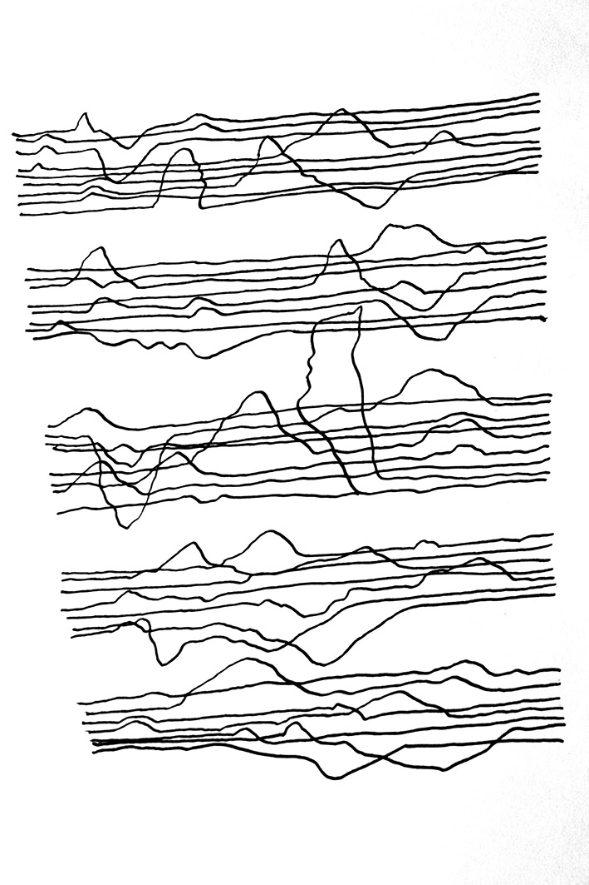

- «Всякая картина неоднозначна; иначе и не бывает, если
- она выражает хоть что-нибудь. Неоднозначность – это
- знак, передающий несколько смыслов сразу».
- (Хосе Ортега-и-Гассет)
- она выражает хоть что-нибудь. Неоднозначность – это
1. Искусство Юрия Тореева, о котором идёт речь в данном блоке (01) – сугубо индивидуально и камерно, то есть не рассчитано на широкую публикацию, не демонстрируется на выставках (по крайней мере, пока).
"увиденный сквозь призму определённого темперамента". (Эмиль Золя)
2. Как именно отображает жизнь искусство Ю. Тореева?
«Цель искусства – не просто отражать [жизнь],а отражать отрицая или благословляя». (В.Г. Короленко)
Искусство Ю. Тореева скорее отрицает, чем благословляет. Точнее – критикует и обличает.
3. Поле зрения Ю.Т. – окружающий мир, близкий пространственно – «на работе и дома». Художник не черпает силу в «окружающей жизни» - он стремится преодолеть её вредное воздействие, высказав своё отношение к ней в живописи и графике.
4. Это естественно и не предосудительно: осудив что-либо, мы тем самым начинаем борьбу с этим вредным явлением.
«Взгляд художника на явления внешней и внутренней жизни отличается от обыкновенного: он более холоден и более страстен». (Томас Манн)
5. Правдивость искусства Ю.Т. не вызывает сомнений: любой современник знает, что наше бытие далеко от совершенства. Но как примирить требование правдивости с требованием «прекрасного»?
Здесь нам поможет специалист по эстетике:
«Прекрасное в искусстве всегда правдиво, однако правдивое не всегда прекрасно» (Э. Ритшель)
И ещё: «Подлинное искусство не терпит лжи» (К.С.Станиславский)
6. Для всех произведений Юрия Тореева характерно присутствие мысли, идеи. Внешность предметов не так важна для Художника, как идея, выраженная в отношениях масс предметов (пятен краски), в их колорите, характере контуров, фоне, фактуре…
«Я всегда буду жертвовать формой, если дело будет идти о выборе между формой и содержанием. Мысль – вот главное». (Марк Твен)
«Внешность в картине не имеет сама по себе никакой цены и должна всецело зависеть от идеи». (И.Н.Крамской)
7. Отличительный признак искусства Юрия Тореева – независимость от «сегодняшней моды », или общепринятой традиции. В его работах можно заметить некоторые приёмы авангарда ХХ в., но они давно уже стали общеупотребительными, утратили авторство, так что о какой-либо подражательности не может быть речи.
"Истинный художник выражает то, что думает, не страшась противодействия вековых предрассудков" (Огюст Роден)
8. Согласно традиции классической эстетики, в произведениях искусства (и особенно живописи) должна быть «красота». Отличие авангарда ХХ века от традиционного искусства состоит прежде всего в антиэстетизме.
Это проявляется наиболее явно в изображениях человека. В картинах кубистов, дадаистов, сюрреалистов, скульптурах Джакометти, Г.Мура – мы уже не любуемся красотой человеческого лица и тела, поскольку вместо неё видим жуткие уродства и деформации. Эра капитализма, переросшего в империализм, нивелировала ценность личности.
Ренессансная красота Человека (пусть даже мифическая) – осталась в прошлом. Даже в нашей сравнительно демократической стране, где традиции реализма ещё живы, мы наблюдаем утрату интереса живописцев к образу Человека.
Убедительный пример: на выставке белорусского искусства Биеннале-5 (декабрь 2016г.) был представлен только один портрет работы Ю.Нестерука «Садам». Что же касается портретов или жанровых картин, отображающих жизнь «простых людей» - то они здесь полностью отсутствовали (как, впрочем, и на предыдущей Триеннале 2015г.) У стороннего зрителя может создаться впечатление, что в нашей стране нет людей (кроме художников).
Возникает вопрос: отображает ли реальность современное белорусское искусство?
Возвращаемся к проблеме красоты. Поскольку Человек утратил красоту (вместе со своим образом) – все вещи также утратили её: ведь красотой наделял их когда-то Человек! Теперь он не может дать вещам то, чего у него нет. Теперь пейзажи и натюрморты Ю.Тореева, а тем более, абстрактные картины, лишены внешней традиционной красоты, или, говоря коротко, антиэстетичны. Мы не можем ими «любоваться».
Нам достаточно того, что Художник понял тяжесть проблем нашей жизни, разделил их с нами и облегчил – только тем, что разделил.
9. И, наконец, проблема влияний модернизма ХХ в.
В наше время это, пожалуй, перестало быть проблемой: если отечественный художник поднялся в своём развитии выше традиционного школьного реализма – ему не избежать влияний (заимствований) «классических» стилей модернизма. Назовём лишь основные: постимпрессионизм, фовизм, кубизм, абстракционизм, орфизм, дадаизм. Можно назвать также некоторые течения второй половины ХХ в.: экзистенциализм, неодадаизм, неоэкспрессионизм.
Земной шар невелик, народы и культуры общаются, обмениваются ценностями и опытом. «Человек в себе и для себя», в сущности, везде одинаков. Поэтому совпадения и заимствования в области искусств – дело естественное и неподсудное.
Иосиф Бродский высказал эту мысль как нельзя лучше:
«Боязнь влияния, боязнь зависимости – это боязнь – и болезнь – дикаря, но не культуры, которая вся – преемственность, вся – эхо». (С.Волков. Беседы с Бродским)
Однажды Валерий Шкарубо рассказал мне случай из своей жизни. На одной из международных выставок он увидел пейзаж японского художника, точь-в-точь похожий на его собственную картину, выставленную там же. Они долго стояли и смотрели друг на друга – белорус и японец.
Всё было понятно без слов.
Примечание: Этот текст может быть как введением, так и заключением заметок о работах Ю.Тореева.
I. СОТВОРЕНИЕ МИРА
В разделах I, II, III рассматриваются работы, избранные самим Художником и присланные им в письме от 02.01.2017г.
Уважаемый читатель! Прошу не заподозрить меня в напыщенности, или в нагнетании возвышенных смыслов (идей) там, где их нет.
Наукой установлено и практикой подтверждено, что творчество Художника аналогично сотворению своего мира (космоса) – индивидуального и неповторимого, поскольку демиург этого «космоса» - Человек – существо индивидуальное и неповторимое. Установлено также, что творчество это происходит в соответствии с теми же законами, которые управляют сотворением микро- макро- и мегамира.
Всякому творению предшествует Пустота. Бытие рождается из Небытия; являющиеся Человеку феномены – из бездны, неограниченной в своих потенциях [Л.1, стр. 553].
В (комп. 73) мы видим поле зрения Художника, пребывающего в состоянии душевной пустоты, отсутствия образов, Нирваны. Это – мир до Сотворения. Несколько чёрных штрихов лишь ограничивают поле зрения и чуть-чуть стимулируют начало действий творческих сил.

(комп. 72): Постепенно из Пустоты начинают возникать – энергия, вращательное движение (первичная форма движения), затем простейшие материальные образования – нити…
(комп. 50) Наконец, происходит разделение силового поля на две половины – левую и правую. Это означает появление жизни, живых организмов [Л. 1, с. 548]. Вакуум начинает заполняться разнообразными существами и формами: здесь есть прямые линии, пятна, зигзаги, нити, фактуры… Заметим: в большинстве абстрактных композиций Ю.Тореева левая и правая половины существенно различны. Случайно ли это? Думаю, что нет. Художник, если и критикует наше бытие, то с доброжелательных позиций. Противостояние различных начал в его творчестве – не война, но закон Природы. Жизнь как таковую Он предпочитает небытию.

Почти уверена, что Юрий Тореев, создавая эти композиции, не имел в мыслях ничего подобного. Скорее, он изображал здесь свои настроения: одиночество, моменты неуверенности, может быть, душевную опустошённость, или отрешённость от житейской суеты… Пусть так. В принципе всякая вещь может быть истолкована различно.
(комп. 64) Эта более чем простая работа логически продолжает ряд композиций 72, 73, 50. Наступило время создавать вещи и конструкции для жизни на Земле. Нужно найти для них удобные универсальные формы. Сама Природа подсказала их: треугольник, квадрат, круг, линия.
В этой простой композиции (№ 64) задействованы все главные числа и формы, необходимые для нужд человечества: 1, 2, 3, 4, ∞, (пи – 3,1415826…) Эту простую картинку можно назвать «Натюрморт № 1».
(комп. 66). Ещё одна ступень перехода от философской живописи к более общепонятной. Здесь мы видим семь ваз для цветов, на которых можно сыграть популярную мелодию «Чижик-пыжик». Три вазы могут принять в себя цветы, остальные четыре – вряд ли. Вероятно, этот рисунок был сделан Художником в весёлую минутку, в порядке эксперимента, или «для отдыха».
II. Органические формы
(комп. 60). Наступило время перейти от абстракций к сотворению органических форм – из плоти и крови, с кожей, костями и чешуёй, с перьями – и даже с подобием человеческого лица. Всё это уже есть в композиции 60.
Пока ещё формы неопределённы, тела свалены в кучу, головы приделаны наудачу к чему-то непонятному. Это – первичный Хаос.
(комп. 63). Затем возникают контуры предметов непонятного назначения. На переднем плане - большой чан, слегка помятый (а может быть, шапка?).

Общий вид композиции не внушает радости.
(комп. 48) Пришло время сотворить человекоподобные существа. Художник начал с голов. Первый опыт оказался неудачным. Видимо, их творец придерживается весьма нелестного мнения о человечестве. С чего бы это?
Чем не угодили ему люди?
(комп. 46) В этой работе сделана попытка усовершенствовать облик Человека и дать ему главенство над всеми тварями. Рисунок лица облагораживается, на голову садится птичка, оказывая тем самым своё предпочтение и уважение «царю живых тварей».
(комп. 52) Облик Человека всё более приближается к реальному; его роль в мироздании возрастает почти беспредельно.
(Продолжение темы «Органические формы» следует в разделе «Портрет»).
III. Геометрические образы.
«Искусство не подражает истинной реальности, а создаёт её заново. Истинной основой видимого мира являются отвлечённые идеи, преимущественно геометрического типа» (П.Сезанн) [Л. 2]
В наше время нет необходимости доказывать право на существование абстрактного направления в живописи. Этот стиль завоевал прочное место в ряду множества других стилей и направлений. Психологической наукой доказано, что всякий человек сознательно или подсознательно реагирует на пространственные и числовые характеристики окружающего мира, на его колорит и яркость. Изображённые художником абстрактные формы и краски способны внушать не менее определённые эмоции или мысли, чем фигуративное искусство. Это многократно доказано ценностью работ В.Кандинского, П.Мондриана, П.Клее, М. Ротко и др., а также в обширной литературе о творчестве художников – абстракционистов.
Сам великий Платон предпочитал «неизобразительное» искусство «подражательному». «Подражательное искусство далеко от действительности: оно только чуть-чуть касается любой вещи, да и тогда выходит лишь призрачное её отображение». [Л. 3]
Геометрические образы Юрия Тореева можно подразделить на три типа: полосы, квадраты и линии.
ПОЛОСЫ
(комп. 1) Любая геометрическая фигура нагружена смыслами.
Волна – это синусоида (график изменения синуса угла радиуса окружности с её горизонтальной осью). В природе волна – это конфигурация поверхности воды, приводимой в движение какой-либо силой (приятно вспомнить курс тригонометрии в средней школе).
Волнообразно происходит смена дня и ночи, времён года, столетий, тысячелетий… Человек переживает в своей жизни состояния роста, развития, расцвета жизненных сил – и затем убывания энергии, старения, угасания…
Композицию (1 2015) можно прочесть как рассказ Художника о своём самочувствии: момент творческого подъёма сменяется признаками сомнений, затем усталости, и, наконец, творческая энергия убывает, уступая место власти негативных эмоций (или биологической потребности в отдыхе).
Графика этой работы – уверенная, основные линии нанесены широкой кистью и твёрдой рукой. Композиция читается как изложение всеобщего закона жизни, не знающего исключений.
(комп. 2) Это картина нашей повседневности, фиксация жизни с близкой точки зрения, дневник повседневных событий (или запись текущих впечатлений). Все дни и события выстраиваются в ряды – в каждом ряду одинаковое число часов (около 8). Есть среди них светлые и тёмные, спокойные и тревожные, порой неудачные, иногда «нормальные»…
Эту работу можно было бы назвать: «В нашей жизни всякое бывает».
Глаз зрителя, бродя по её территории, получает массу впечатлений различного характера – как будто по лесу, большому городу, или по обширному художественному музею.
(комп. 9) Здесь сочетаются формы противоположного характера: искусственные (архитектурные) и естественные (растительные).
В принципе это вполне возможно, но в данной ситуации растительные формы явно подавлены архитектурными. Широкая серая полоса прочитывается как стена, окружающая чахлый парк с безлистными остатками деревьев, а высокие торжественные ворота ведут «в никуда», в пустоту. Растительность напоминает о себе только размытыми кляксами краски на «воротах» и «стенах».
Кроме того, конфигурация серой полосы подозрительно напоминает свастику – а стало быть, символизирует уничтожение жизни.
Эта композиция может быть основой плаката, агитирующего за сохранение природных ресурсов (лесов, лугов, деревьев…)
(комп. 10 2015) Мотив горизонтальной полосы так же неисчерпаем, как мотив синусоиды. Композиция (10 2015 ) прочитывается как «антивоенная сага» (баллада), а может быть, симфония.
Это история солдат, идущих на войну. В верхнем ряду нам видится ряд солдат, вооружённых копьями (или ружьями). Они идут справа налево, то есть не к боям и победам (возможным), но к неизбежной гибели.
В последующих пяти рядах наглядно показано, как редеет войско, как фигуры солдат превращаются в «палочки», а затем в «могилки»; в последнем ряду уже и могилки забыты, а память о солдатах начинает исчезать.
Композиция картины выстроена в классических традициях. Изображённые здесь события происходят по «вечным» законам неизбежности войн и торжества смерти. В этом убеждает нас мерный ритм чёрных полос на белом фоне.
(комп. 11 2015) В этой композиции, построенной также по типу «рядов», или «полос», читается возражение на мысль, заключённую в предыдущей работе.
Там утверждается ненарушимость закона – человеческого и природного.
Здесь же, в (комп. 11) – этой мысли противопоставлена другая – о плодотворности нарушений (казалось бы) незыблемых законов. Ведь не будь таких нарушений, не было бы и разнообразия живых существ, и всей материальной культуры человечества.
Анекдот: Наука утверждает, что сделать «нечто» невозможно. Однако, появляется невежда, который этого не знает – и он делает.
В (комп. 11) много «беспорядков»: нарушены границы между горизонтальными полосами, всюду случайные потёки краски, фигурки 4-го и 5-го рядов «наползли» друг на друга. Здесь есть закон, но он соблюдается не слишком строго, уступая иногда каким-либо случайным обстоятельствам.
Такова жизнь, как говорят французы.
(комп. 14 2015) И всё же – закон есть закон, а тот, кто его нарушает – попадает на территорию, огороженную вот таким забором:
Этот «забор» - преграда, встающая на пути нашей жизни всякий раз, когда у нас возникает желание сотворить что-либо необыкновенное, или достичь недостижимого, или обладать недоступным. Как говорят в народе: «Дай сердцу волю – заведёт в неволю»…
(комп. 27 2015). Эта композиция подобна страничке из нотного альбома. Художник решил записать музыку своей души на нотном стане, начерченном без линейки, «от руки» (поскольку взять в руки линейку – жест для Него невозможный). – И что же? Оказалось невозможным провести все линии ровно. Каждая из линий этого «нотного стана» вздрогнула, или сделала скачок – то вверх, то вниз – или даже попыталась вторгнуться в пределы соседнего семейства линий (третья полоса).

Изобразив все пики «холмов» в виде нот, можно было бы сыграть эту музыку… Не надо: кто же выдержит эту какофонию? Впрочем, всё это – моя фантазия. Для Юрия Тореева это, по-видимому, просто игра, гимнастика для руки и отдых для воображения.
Да здравствует Homo ludens!
(комп. 71) Эту композицию я бы повесила у себя над рабочим столом. В ней есть всё, что нужно «для счастья»: прочные массивные горизонтали и тонкие изящные вертикали. Есть извечный порядок их расположения: тяжёлое внизу, лёгкое вверху. Есть большие столы для работы и стулья для сидения.
Присутствуют также и маленькие чудеса живописи: контрасты широкого смелого мазка и случайных (стихийных) затёков краски; контраст чёткого контура и «бахромы» мелких штрихов, оставленных на бумаге волосками кисти. Есть чем любоваться – и не в последнюю очередь – чистой белизной фона, тактично уравновешенной чёрными пятнами фигур.
КВАДРАТЫ И ПРЯМОУГОЛЬНИКИ
(комп. 12 2015) Горизонтальная полоса как основа композиции – фактор дисциплинирующий, и тем самым – стесняющий свободу руки и души Художника. Разбив полосу на квадраты, он облегчённо вздыхает: теперь ограничений стало меньше, а свободы – больше. (Не будем забывать, что мы здесь имеем в виду свободу выражения чувств и мыслей Художника).
По существу, в каждом квадрате рассказана своя «история жизни в данный период времени», наполненная различными ощущениями и переживаниями (преимущественно – невесёлыми).
(комп. 13 2015) Здесь ситуация становится более благоприятной: чёрных пятен становится меньше, квадраты уменьшаются в размерах и теряют форму, белые и светло-серые пятна занимают около половины площади листа.
Появляется характерная для многих работ Ю.Т. особенность композиции: левая и правая половины её заметно отличаются. Думаю, что это признак жизнеспособности мышления Художника, а стало быть, и его искусства. (комп. 33) Продолжение темы «Квадраты» логично: квадраты трансформируются в прямоугольники, треугольники и даже полукруги. Художнику тесно в заранее заданных рамках. От рядов он переходит к двумерным структурам с непредсказуемым (случайным) стимулом к изменению форм пятен.
Такую структуру можно создавать почти механически, думая в процессе рисования о чём-то постороннем, или не думая ни о чём (если это возможно). Эта композиция могла бы служить знаменем анархистов – настолько выразительным, что не требовалось бы и словесного лозунга типа «Долой принуждение!»
(комп. 40) Однако, анархия и дезорганизация – явления временные и краткосрочные. После беспорядков обычно восстанавливается тот или иной порядок. В (комп. 40) мы видим, как «бунтари» уходят с поля боя «организованной толпой», оставляя после себя лишь какие-то воспоминания на дальнем плане.
Всё становится определённым и ясным: пространство – белое, тела – чёрные. Есть верх и низ, ближний, средний и дальний планы.
Well and beautifully
(комп. 42) Здесь приключения мятежных квадратов приходят к естественному завершению: индивидуумы собираются в общество, и лишь один чудак, неисправимый индивидуалист, бредёт куда-то своим непредсказуемым путём. Таков его выбор.
(комп. 37) Эта работа достойно завершает небольшую серию «Квадратов и прямоугольников». И те, и другие здесь присутствуют, но они почти неузнаваемы: деформированы, перекошены, обрезаны, полускрыты соседними яркими пятнами.
Здесь происходит некий карнавал форм и красок под раблезианским лозунгом: «Делай, что хочешь!» Здесь Художник дал своей руке полную свободу – но хорошо воспитанная рука отказалась от многообразия красок – она выбрала только три: белую, красную и чёрную.
Участники карнавала во-всю разгулялись, но за ними наблюдает «недрёманное око» - подобие человеческого профиля у правого края картины.
Полностью освободиться от норм и правил иногда хочется, но это, к счастью, не удаётся.
ЛИНИИ
(композиция 38) На первый взгляд, здесь торжествует полная свобода волеизъявления Художника: он не ограничен ни сюжетом, ни заданным ритмом, ни характером формы… Присмотревшись внимательно, замечаем: это демонстрация жесточайшего закона: каждая линия должна быть зачёркнута, то есть уничтожена. Я нашла в этой композиции только одну небольшую «чёрточку», свободную от пересечений, толчков и насильственных деформаций (когда гнут в дугу, или в три погибели). Все остальные линии подвергаются враждебным действиям.
Придётся назвать это произведение «Война всех против всех». Причём – в верхней части картины происходит борьба, а внизу валяются трупы.
Здесь настроение Художника, наконец, смягчается; эмоции приобретают положительный характер. Линии становятся тонкими, контуры пятен – мягкими и органическими. Цветовая гамма монохромна: белый + синеватый.
И в той, и в другой работе угадывается нечто органическое. Это естественно: человек, будучи продуктом живой природы, не может надолго отказаться от контактов с природными формами – как в жизни, так и в своей деятельности.
Эта работа – манифест отрицания геометрических форм. Художник изображает квадраты и прямоугольники, а затем ставит на них жирные кресты, как бы давая зарок – не использовать их больше никогда.
И действительно – в числе работ, отобранных Ю.Тореевым для обсуждения, больше не видим геометрических мотивов.
ЧЕЛОВЕК
В изображении человека Юрий Тореев проявляет большую изобретательность. Каждый «портрет» изобретает и клеймит пороки общества в целом, или отдельных его представителей.
(chelovek 1)- это безличный «винтик», частица толпы, неотличимая от других ему подобных частиц. Он превратился в схему, утратил индивидуальность.
(chelovek 2). Он – не homo sapiens, а голый раб, весь смысл жизни которого – тащить тяжёлую ношу, покорно склонив голову, в которой нет мыслей. Художник не сочувствует ему – только презирает.

(chelovek 5). Мысль этого «портрета»: человек обречён на одиночное заключение в тесной тюремной камере (каковой является его собственная природа и обстоятельства жизни). Он упирается головой и конечностями в стенки своего узилища, пытаясь их разрушить, но все его старания напрасны.
(chelovek 6). Этот «человек» превратился в робота, сложенного из брусков и плиток. Он обходится без головы: им управляют Те, Кто его создал.
ПОРТРЕТЫ
Каждая работа этой серии – «анти-комплимент» человечеству, пасквиль на человеческий род (точнее, на его женскую половину).
(Portret 8): Двенадцать рисунков представляют собой абстрактные композиции, вписанные в один и тот же силуэт женского лица. Здесь хорошо читается мысль Художника: «Все вы, бабы, одинаковы!»
Некоторые «модели» кажутся Художнику лишёнными естественной женской мягкости (Portret 7), другие – легкомысленными и ветреными (Portret 20), или ничтожными и двуличными (Portret 15, 23). Иногда женщине приписывается «собачья» сущность (Portret 21), или безвкусица (Portret 17a ).

Больной женщине Художник не сочувствует – он рисует на неё карикатуру (sanatorium pod klepsidroj 2 2015). Наконец, в работе «Состояния и настроения» Юрий Тореев подтверждает мысль, высказанную в (Portret 8) - «Все женщины безобразны, но каждая по-своему».
(Portret s miortwoj pczeloj 2015) – без комментариев.
Л. Миронова,